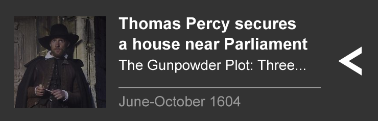

37 days: Countdown to World War One

Presented byProf. Margaret MacMillanHistorian
How the world went to war
In the summer of 1914, Europe went to war. It began a conflict that would engulf almost the entire world. The assassination of Archduke Franz Ferdinand pushed existing animosities and alliances into the most catastrophic war the world had ever seen.
How did this happen? In recent times Europe had stepped back from the precipice; in 1914 there would be no peace or compromise. As grave events spiralled out of control Europe could not step back from the brink.
28 June
Archduke assassinated

You need to have JavaScript enabled to view this clip.
Margaret MacMillan describes the events leading up to Franz Ferdinand's assassination. Clip from 1914: Day by Day, 28 June (Radio 4)
Franz Ferdinand, heir to the throne of the Austro-Hungarian Empire, was shot dead while on a state visit to the Bosnian capital of Sarajevo.
His killer was the 19-year-old Gavrilo Princip, backed by Serbian terrorist organisation, 'the Black Hand', and joined by a group of other would-be assassins. One of them threw a bomb at the Archduke's motorcade in a first, unsuccessful, attempt on his life. But, when a fateful mistake meant Franz Ferdinand’s driver took the car directly to the street corner where Princip was standing, his two shots killed the Archduke and his wife, Sophie Chotek.
1914 Day by Day on Radio 4, the build up to war: 28 JuneFollow the story of the assassination live on 28 JuneThe view from Sarajevo – a Month of Madness on Radio 4Thank God this Bosnian trip is nearly over
29 June
Austria-Hungary wants revenge

You need to have JavaScript enabled to view this clip.
Margaret MacMillan explains how the Serbian government tried to distance itself. Clip from 1914: Day by Day, 29 June (Radio 4)
In Sarajevo, Serbian shops were destroyed during riots to shouts of "death to the Serbian murderers."
Although Austria-Hungary blamed Serbia for the assassination, the Serbian government tried to distance itself claiming it had tried to warn Austria of a plot. The Austrian chief of military staff, Conrad von Hötzendorf, wanted war, but the foreign secretary was more cautious, fearing that Serbia's long time ally Russia would be angered by any attack and be forced to step in. But perhaps Austria-Hungary's powerful ally Germany would back them against Russia.
1914 Day by Day on Radio 4, the build up to war: 29 JuneOn this month in 1604
Thomas Percy secures a house near Parliament
Thomas Percy secures a position as a royal bodyguard thanks to his patron, the Earl of Northumberland, and moves to a house not far from Parliament.
Guy Fawkes poses as Percy's servant using the pseudonym John Johnson. This means he is free to roam around Parliament. Ringleader Catesby has a house across the river, in Lambeth, where they start to store gunpowder. The house is looked after by new plotter Robert Keyes. He is a distant cousin of Wintour and Wright and a Catholic convert. As the opening of Parliament is postponed until February 1605, the plotters go their separate ways that summer and don't meet again until October.
30 June
Britain and Germany united

You need to have JavaScript enabled to view this clip.
Margaret MacMillan describes sporting competition between the German and British navies. Clip from 1914: Day by Day, 30 June (Radio 4)
At the German naval base of Kiel it was the last day of the Royal Navy’s visit.
Over the last few days German and British navies had carried out joint manoeuvres. The German Kaiser, Wilhelm II, a cousin of the British King, George V, was proud to be an admiral of the British fleet. Although there were some suspicions between the two nations they parted ways on good terms.
1914 Day by Day on Radio 4, the build up to war: 30 June Diary of a British Naval Commander, Kiel, 1914Comrades in the past and always
5 July
Germany promises to back Austria-Hungary

You need to have JavaScript enabled to view this clip.
Margaret MacMillan explains how the Kaiser promises support for Austria-Hungary. Clip from 1914: Day by Day, 5 July (Radio 4)
When he learnt of Austria-Hungary’s wish to attack Serbia, Kaiser Wilhelm pledged Germany's support, even if it meant war with Russia.
This became known as Germany’s ‘blank cheque’, which would guarantee any action they decided to take against Serbia. The Kaiser explained: “Should a war between Austria-Hungary and Russia be unavoidable, Austria-Hungary can rest assured that Germany, your old faithful ally, will stand at your side.” Perhaps he was unaware what the consequences could be for Europe.
1914 Day by Day on Radio 4, the build up to war: 5 JulyGermany's July crisis – a Month of Madness on Radio 4Biography of Kaiser Wilhelm IIThis time I shall not give in. This time I shall not give in
7 July
Austro-Hungarian action against Serbia delayed

You need to have JavaScript enabled to view this clip.
Margaret MacMillan describes Prime Minister, Tisza's rejection of plans for a quick attack on Serbia. Clip from 1914: Day by Day, 7 July (Radio 4).
With Germany's backing some Austrian ministers were in favour of a quick attack on Serbia.
However any plan needed the approval of both Austrian and Hungarian leaders, but the Hungarian Prime Minister Tisza was not convinced. He was afraid an attack on Serbia would spark a war with its much larger neighbour, Russia. Instead the ministers agreed to draw up an ultimatum to Serbia - some wanted to make it so harsh the Serbs would be forced to reject it, and trigger war between the two countries. This delay could allow time for Russia to join the fray.
1914 Day by Day on Radio 4, the build up to war: 7 JulyRead the Austrian Ministerial Council Minutes, 7 July9 July
Britain tries to deter Germany

You need to have JavaScript enabled to view this clip.
Sir Edward Grey meets the German ambassador Prince Lichnowsky, clip from 37 Days (BBC Two).
Sir Edward Grey, British Foreign Secretary, told the German ambassador that Britain had not promised to aid France or Russia in a European war.
In 1907 Britain moved into a closer friendship with France and Russia, as part of the 'Triple Entente'. Grey was aware of Germany's support for Austria-Hungary and hinted at collaboration between the French and British military. He explained that British public opinion would make it very difficult for him to stay out if events in the Balkans escalated. But his softly-softly approach would not be enough to hold Germany back.
37 Days: the complex story of the final weeks before WWIOn this month in 1972
Bloody Friday
On this day, the IRA detonated 19 bombs in and around Belfast city centre killing 9 people and injuring 130.
The IRA insisted that ample warnings had been given and the intention was not to kill civilians - however the warnings were inadequate and imprecise. The bombing was to give the British government a warning it was still in business. Ten days after Bloody Friday, in the biggest British military operation since Suez, 12,000 soldiers with bulldozers and tanks entered what were considered the no-go areas of the province.
19 July
Secret plans made to strike

You need to have JavaScript enabled to view this clip.
Prof. Christopher Clark explores how militant voices swayed decision-makers in Vienna in 1914. Clip from Month of Madness, episode two (Radio 4).
Austria-Hungary’s ministers gathered for a secret meeting in Vienna, where they made the final decision to issue an ultimatum to Serbia.
Just five days earlier the one person blocking it changed his mind. Tisza is now in support of war: “It was very hard for me to come to the decision to give my advice for war, but I am now firmly convinced of its necessity”. The ultimatum was approved. If Serbia agreed to its terms, it would come under Austria-Hungary’s control. If it refused, there would be war.
Why did Vienna go to war? Month of Madness on Radio 421 July
Russia begins to stir

You need to have JavaScript enabled to view this clip.
Margaret MacMillan describes how the Russian foreign minister warns the Austrian ambassador. Clip from 1914: Day by Day, 21 July (Radio 4).
Having discovered Austria-Hungary’s intentions to threaten Serbia, Russia's foreign minister issued them with a warning.
Russian public opinion was in favour of protecting Serbia, and Sergei Sazonov explained to the Austrian and German ambassadors: "If Austria-Hungary is absolutely determined to disturb the peace, she ought not to forget that she would have to reckon with Europe. In no case should there be any talk of an ultimatum."
1914 Day by Day on Radio 4, the build up to war: 21 JulyFrance and Russia together - Month of Madness on Radio 4If Austria-Hungary is absolutely determined to disturb the peace, she ought not to forget that she would have to reckon with Europe
23 July
The impossible ultimatum

You need to have JavaScript enabled to view this clip.
Margaret MacMillan describes Austria’s ultimatum to Serbia. Clip from 1914: Day by Day, 23 July (Radio 4).
Ignoring Russian warnings, Austria-Hungary issued the Serbian government with its ultimatum.
It blamed Serbian officials for Franz Ferdinand’s assassination and made a series of demands. Among them: Serbia must stop all anti-Austro-Hungarian propaganda and remove anyone deemed guilty of it from office; it must accept Austria-Hungary’s collaboration in suppressing subversive movements within Serbia, and it must allow Austria to direct judicial proceedings against accessories in the assassination plot. In short, Serbia was being asked to hand over sovereignty.
1914 Day by Day on Radio 4, the build up to war: 23 JulyThe ultimatum that triggered war: read it in fullAustria has sent a bullying and humiliating ultimatum to Serbia… we are within distance of a real Armageddon
25 July
Serbia concedes, but...

You need to have JavaScript enabled to view this clip.
Prof. Christopher Clark describes how Kaiser Willhelm offered to mediate for peace. Clip from Month of Madness, episode two (Radio 4).
Serbia's deadline for responding to Austria-Hungary’s ultimatum was 18:00 central European time.
After checking he had Russia’s support in the event of war, the Serbian Prime Minister delivered his reply to the Austrian embassy. Serbia conceded to all of the demands, apart from two. Key among them was the request that Austria-Hungary be allowed to direct judicial proceedings in Serbia - a violation of its constitution. Serbia had effectively rejected the ultimatum and, as planned in Vienna, war was now inevitable.
Not enough? Serbia’s response to Austria-Hungary26 July
Britain makes a bid for peace

You need to have JavaScript enabled to view this clip.
Sir Edward Grey discusses a proposal for peace with Prime Minister, Henry Herbert Asquith and Winston Churchill. Clip from 37 Days (BBC Two).
The British foreign secretary Sir Edward Grey proposed a peace conference to try to stop Europe descending into war.
His plan was that Italy, Germany, France and the UK, the four countries not directly involved in the Balkan crisis, should act as mediators between Austria-Hungary, Serbia and their ally Russia. This offer was met with hostility from the German Kaiser who didn't want to be seen to give in to Britain's "condescending orders".
Could war have been avoided in 1914? 37 Days: the complex story of the final weeks before WWIOn this month in 1914
Back from the brink
With Home Rule having received Royal assent in September 1914, tensions in Ireland were sated by events on the continent.
The Larne and Howth gun-runnings were Unionist and Nationalist attempts to arm militias in preparation for, what seemed like, inevitable hostilities. Historian and author Turtle Bunbury explains just how the outbreak of World War One avoided the seemingly 'imminent' Civil War and why those with opposing ideologies in Ireland put their differences aside to fight for the same cause in Europe
28 July
Austria-Hungary declares war on Serbia

You need to have JavaScript enabled to view this clip.
Margaret MacMillan describes the Kaiser's peace plan. Clip from 1914: Day by Day, 28 July (Radio 4)
With all of their demands not met, Austria-Hungary moves to declare war on Serbia.
Even though they were now at war, the Austrian army was not ready to attack, and would not be for another two weeks. Germany was frustrated with its ally; it had been a month since Franz Ferdinand’s assassination and with each day that passed, sympathy for Austria-Hungary’s cause among other European powers was ebbing away.
1914 Day by Day on Radio 4, the build up to war: 28 JulyNewspaper report - Austria-Hungary's declaration of war29 July
Can the Royal cousins avert disaster?

You need to have JavaScript enabled to view this clip.
The Tsar and the Kaiser communicate by telegram. Clip from Royal Cousins at War (BBC Two).
The Tsar agreed to mobilise the Russian army against Austria-Hungary, but before he sent the order he received a telegram from his cousin the Kaiser.
“Nicky, I share your wish that peace should be maintained. It would be quite possible for Russia to remain a spectator of the Austro Serbian conflict without involving Europe in the most horrible war she ever witnessed. I think a direct understanding between your government and Vienna possible and desirable and my government is continuing its exertions to promote it.” Russian military plans meant mobilisation had to be against both Austria-Hungary and Germany. The Tsar called it off.
A family at war: the kings of Europe in WW130 July
Russia mobilises for war

You need to have JavaScript enabled to view this clip.
Margaret MacMillan describes the Tsar's decison to order mobilisation. Clip from 1914: Day by Day, 30 July (Radio 4)
Shared blood between Queen Victoria’s grandchildren was not enough to stop the march to war.
Under immense pressure from his foreign minister, the Tsar ordered his armies to prepare for war and mobilise against Germany and Austria-Hungary. Although he called it off the previous day the Tsar was convinced Russia must protect Serbia. His ministers advised that if he did not act boldly, the Russian dynasty would be at risk. Fully understanding the consequences, it was not a decision he took lightly.
1914 Day by Day on Radio 4, the build up to war: 30 JulyBiography of Tsar Nicholas IIRemember, it's a question of sending thousands and thousands of men to their death
31 July
Germany prepares for war on two fronts

You need to have JavaScript enabled to view this clip.
Britain, France and Russia form the "Triple Entente" that 'encircles' Germany. Clip from Royal Cousins at War (BBC Two).
The Kaiser believed Britain, France and Russia would use the pretext of war between Austria-Hungary and Serbia to encircle and “annihilate” Germany.
German military plans aimed to deal with this “encirclement” by making a pre-emptive strike against France, through Belgium, before turning the bulk of its forces east to deal with Russia. Germany issued an ultimatum to Russia that unless it called off mobilisation, war will be declared. And, afraid of an attack by France, Germany demanded that its neighbour in the west show friendship towards them by allowing German soldiers to occupy French frontier forts for the duration of war with Russia.
Why did Germany have to attack France and Russia?There is still hope, although the clouds are black and blacker
1 August
Germany declares war on Russia

You need to have JavaScript enabled to view this clip.
Margaret MacMillan describes the Kaiser’s reaction to news from the German ambassador in London. Clip from 1914: Day by Day, 1 August (Radio 4)
With no word from St. Petersburg the German Chancellor addressed his parliament. Germany would declare war on Russia at 17:00.
As he delivered the declaration, the German ambassador asked Russian foreign minister Sazonov three times whether Russia would back down. Each time the answer was no. The German army was then ordered to mobilise. In the west, France had already begun mobilising its armies in anticipation of German attack. A European war was now inevitable.
1914 Day by Day on Radio 4 the build up to war: 1 AugustOn this month in 1994
1994 Ceasefire
The IRA intensified its London bombing campaign, the loyalist paramilitaries responded by stepping up its campaign.
In 1994 the IRA carried on killing policemen, whilst the UVF and UFF carried on slaughtering Catholics in even greater numbers. People could not believe that amidst the horror, peace was still being talked about. But its beginning finally came about when the IRA announced its long-awaited ceasefire with 'a complete cessation of military operations'. There were celebrations in Republican heartlands with Sinn Fein claiming the IRA was 'undefeated' but the word 'victory' was notably absent.
If the iron dice now must roll, then may God help us
2 August
Germany tells Belgium to step aside

You need to have JavaScript enabled to view this clip.
The German ultimatum is delivered to Belgium. Clip from 37 Days (BBC Two).
On the pretext of preventing a French attack, Germany sent an ultimatum to Belgium asking for safe passage through its territory.
If the Belgian government said no, Germany would consider them an enemy. Britain had promised to guarantee Belgium’s neutrality, and if the German demand was rejected, and soldiers crossed its border, Britain would be obliged to act. At 02:30 the following morning, Belgium did exactly that. The ultimatum was rejected. The British government now had to make a terrible decision.
37 Days: the complex story of the final weeks before WWI3 August
Germany declares war on France

You need to have JavaScript enabled to view this clip.
Prof. Christopher Clark examines the reaction of British Foreign Secretary, Sir Edward Grey. Clip from Month of Madness, episode two (Radio 4).
In Paris, the German ambassador delivered Germany’s declaration of war to the French foreign ministry.
France had been careful to do nothing to provoke Germany - positioning its troops 10 km from the German border - but Germany’s military plans were inflexible. They had to defeat France before attacking Russia. In London, Sir Edward Grey made a speech in parliament: “If we do stand aside we would sacrifice our respect and good name and reputation before the world”. Opposition to war in Britain was dying away.
How Britain went to WW1 – Month of Madness on Radio 4The lamps are going out all over Europe. We shall not see them lit again in our lifetime
4 August
Britain sends an ultimatum to Germany

You need to have JavaScript enabled to view this clip.
Then Chancellor, David Lloyd George calls for Britain to act against Germany. Clip from 37 Days (BBC Two).
As German troops advanced into Belgium, the British cabinet was agreed: it could not stand aside. An ultimatum was sent to Berlin.
The deadline for Germany to reply was 23:00 (GMT). Just after 19:00 the British ambassador, Goschen, went to see the German ambassador with the ultimatum. The German ambassador blamed Britain for "all the terrible events that might happen", but Goschen protested that it was a matter of honour for Britain to protect Belgium's neutrality. As the hour of the deadline approached, an anxious crowd waited outside Downing Street.
Nick Robinson on Lloyd George, Britain’s wartime leader37 Days: the complex story of the final weeks before WWI4 August
Britain declares war on Germany

You need to have JavaScript enabled to view this clip.
Jeremy Paxman describes the last hours before war was declared. Clip from Britain's Great War (BBC One).
The Kaiser and his government refused to stop the invasion of Belgium and at 23:00, Britain and Germany were at war.
The European powers were pitted against each other and Britain would drag its global empire into the conflict. An assassination in southern Europe, brought war not only to the wider continent, but to the populations of Africa, Asia, Australia, New Zealand, and North and South America. Many believed the war would be over within months, but the guns did not fall silent for another four years, and millions lost their lives.
Who started WW1? 10 historians give their viewSix months should see the end of it